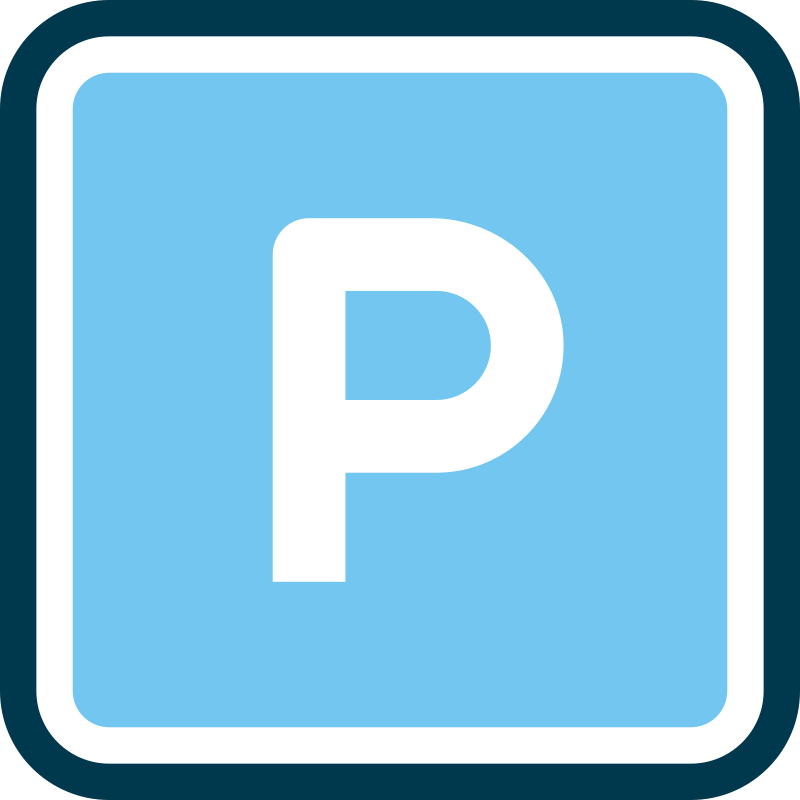

oottattattoo.nl 💀 Het begin van een heeellee boel skulls! Beide armen en beide benen worden helemaal vol getatoeëerd — van korte mouw tot korte broek, een volledige sleeve set vol verschillende skulls. Flink project, maar supertof om aan te werken!
Van idee
Naar kunstwerk.
Tattoo studio uit Assendelft voor Uitgeest
Studio uit Assendelft, op 20 minuten rijden van Uitgeest. Gespecialiseerd in Realism, Dotwork, Black & Grey en Lettering.


100+ tevreden klanten gingen je voor
Oottat Tattoo ligt in Assendelft, op ongeveer 20 minuten rijden vanaf Uitgeest. Wij bedienen met trots klanten uit Uitgeest, Beverwijk en de hele regio.
Onze studio in Assendelft is goed bereikbaar vanuit Uitgeest. Met de auto ben je er in ongeveer 20 minuten via de N203.
Veel tevreden klanten uit Uitgeest en omgeving gingen je al voor. Bekijk onze reviews en ontdek waarom zij voor ons kozen.

Parkeer gratis voor de deur. Geen parkeermeters of vergunningen nodig. Je kunt gewoon komen, voor de deur parkeren en je loopt zo naar binnen.
Vanaf Uitgeest centrum: neem de N203 richting Beverwijk/Assendelft (±20 min). Gratis parkeren voor de deur.
Norbertijnenstraat 1
1566 LK Assendelft
(20 minuten van Uitgeest)
Alleen op afspraak
Flexibele tijden in overleg


Oottat Tattoo, opgericht door Guido Pruim, is uitgegroeid tot een vertrouwde studio in de regio en biedt custom tattoo's in een schone, professionele en rustige omgeving. Veel klanten uit Uitgeest, Beverwijk en de Zaanstreek weten ons te vinden.
Wij gebruiken altijd een schone werkplek, goede apparatuur en een professionele aanpak zodat jij ontspannen je tattoo kunt laten zetten.
Bekijk een paar van onze posts om onze stijl, de sfeer van de studio en het werk te proeven.
oottattattoo.nl 💀 Het begin van een heeellee boel skulls! Beide armen en beide benen worden helemaal vol getatoeëerd — van korte mouw tot korte broek, een volledige sleeve set vol verschillende skulls. Flink project, maar supertof om aan te werken!
oottattattoo.nl ✨Bij Oottat Tattoo staat jouw wens op nummer één. Wij denken met je mee en passen elk ontwerp aan totdat jij volledig tevreden bent.
oottattattoo.nl Vandaag deze gladiator tattoo in zijn geheel af mogen maken!⚔️ Thanks voor het vertrouwen! Tot de volgende keer. Oottat Tattoo

oottattattoo.nl Vandaag mocht ik deze mooie tekst “Memories last forever” zetten een eerbetoon vol liefde en kracht. Soms zegt een kleine zin meer dan duizend woorden. 💫

oottattattoo.nl Dit keer bij Oottat Tattoo een leeuwin met bloemen gezet.Voor haar een persoonlijk symbool en meteen haar allereerste tattoo.Super leuke klant bedankt voor het vertrouwen! 🖤
oottattattoo.nl ⏳Vandaag deze tattoo mogen zetten. Zijn aller eerste tattoo. Een zandloper, eenmaal is je tijd op. T is oke. Waren de laatste woorden. Wat een prachtig gebaar en een mooi eerbetoon. Bedankt voor de mooie dag, je bent een leuke gast!

oottattattoo.nl Symbolen tattoo gezet, deels over een litteken heen. Fineline met subtiele dotwork erin verwerkt. Bedankt voor je vertrouwen 🙏
oottattattoo.nl Ink That Speaks ⚡Geen dertien-in-een-dozijn tattoos, maar custom werk in een privé studio waar kwaliteit en hygiëne op #1 staan.

oottattattoo.nl Memorial tattoo ter nagedachtenis aan Peedee 🐾 Strak, persoonlijk en met aandacht gezet
Interesse gekregen? Maak een afspraak voor een kennismaking, consult of sessie.
Vanaf het eerste moment zijn goede reiniging en continue bescherming van je tattoo onwijs belangrijk. Om de beste kwaliteit te garanderen zijn dit de bare minimums waarmee jij jouw kunstwerk goed verzorgd.
We vertalen je idee naar een tattoo die sterk ontworpen is en echt bij je past.
Deel je voorbeelden, plaatsing en stijlvoorkeuren. Daarna plannen we een kennismaking en bouwen we samen een ontwerp dat klopt in vorm, flow en detail.